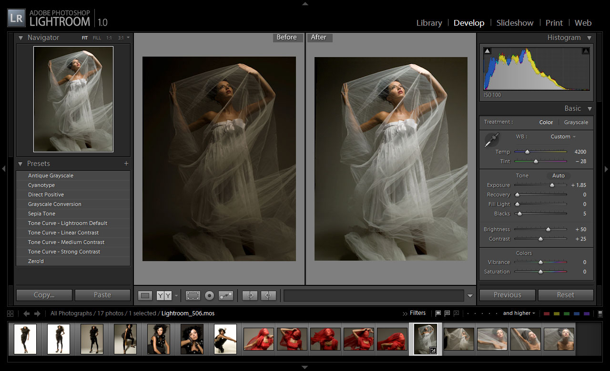
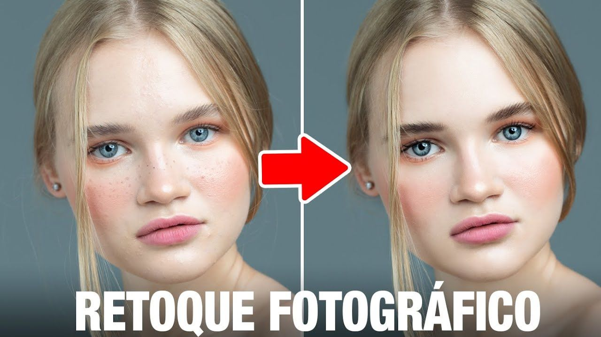

Arte en Cámara
Arte en Cámara
Arte en Cámara
Arte en Cámara

La edición fotográfica es la modificación y el procesamiento de imágenes. Estas imágenes pueden ser fotografías digitales, ilustraciones, impresiones o fotografías en película. Se realiza por muchos motivos: desde eliminar imperfecciones y corregir errores técnicos, hasta crear imágenes completamente nuevas.

Aunque a veces se usan como sinónimos, el retoque busca mejorar la calidad de la imagen sin alterar su veracidad básica.
La manipulación implica cambiar el contenido de manera significativa (añadir, quitar o alterar elementos) y puede ser engañosa.
En fotografía editorial o periodística, la manipulación está mal vista y puede tener consecuencias éticas y legales.
Además de programas como Photoshop, Gimp y Paint, existen editores especializados, plugins y soluciones basadas en inteligencia artificial para tareas como reducción de ruido, ampliación sin pérdida o relleno generativo. La elección depende del tipo de trabajo: retoque fino, restauración, composición compleja o ediciones rápidas para redes sociales.
La edición fotográfica plantea cuestiones éticas importantes. En publicidad y moda, el retoque excesivo puede transmitir estándares irreales de belleza. En periodismo, alterar una imagen puede violar normas de veracidad y confianza. Además, modificar imágenes sin consentimiento puede infringir derechos de autor y de imagen. Con la llegada de deepfakes y herramientas generativas, aumenta la responsabilidad de indicar cuándo una imagen ha sido manipulada y evitar su uso para engañar o difamar.